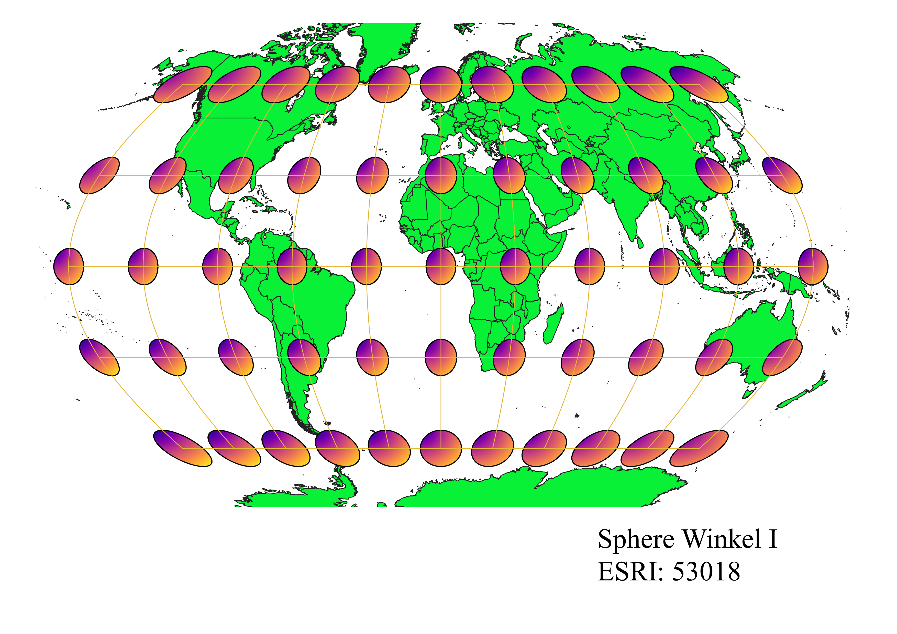

Using QGIS to explore the different world projections
How I displayed different map projections using QGIS:
>
summary
WGS84 Projection
Some observations
Aitoff Projection
Some observations
Pseudo-Mercator Projection
Some observations

Sphere Winkel I Projection
Some observations

World Cylindrical Equal Area Projection
Some observations

World Equidistant Conic Projection
Some observations

North Pole Azimuthal Equidistant Projection
Some observations

Sphere Quartic Authalic Projection
Some observations

World Polyconic Projection
Some observations

Data used for this project
Download Natrual Earth 1:10m Cultural Vector